29/04/2020 — Ngừng tim. Điện tâm đồ cho thấy gì? Xem thêm nhịp đôi kỳ dị.
Bản dịch tiếng Việt của bài "Cardiac Arrest. What does the ECG show? Also see the bizarre Bigeminy." – Dr. Smith’s ECG Blog. Giữ nguyên toàn bộ 14 hình ảnh của bản gốc.
Một phụ nữ 60 mấy tuổi nhập viện sau một cơn ngừng tim có người chứng kiến. Hồi sinh tim phổi được bắt đầu ngay lập tức. Đội cấp cứu ngoài viện (EMS) đến nơi và thấy bệnh nhân trong tình trạng hoạt động điện vô mạch (PEA) với phức bộ QRS rộng. Bệnh nhân được tiêm 3 mg epinephrine tĩnh mạch và được hồi sinh tim phổi nâng cao (ACLS) nhiều vòng trong khoảng 20 phút.
Chồng bệnh nhân kể rằng bà thấy không khỏe trong 2 tuần qua, than chóng mặt và tiêu chảy.
Bệnh nhân chưa từng được khử rung.
Tôi được nhắn tin gửi điện tâm đồ này theo thời gian thực, nhưng hóa ra đây thực sự là điện tâm đồ thứ 2 được ghi tại khoa cấp cứu (ED).

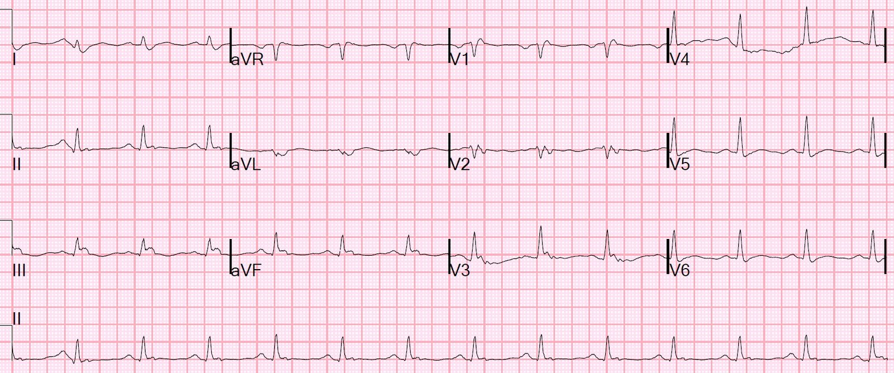
Đây là những gì tôi đã viết:
Với tôi, bản ghi này trông giống giả STEMI (pseudoSTEMI). Thứ có vẻ là ST chênh lên dường như là một phức bộ QRS rộng. Tuy vậy, tôi chỉ đang xem trên điện thoại.
Quả thật, nếu bạn tìm điểm kết thúc của QRS, vốn dễ thấy ở V1, rồi kẻ một đường thẳng xuống chuyển đạo II chạy ngang phía dưới, thì bạn có thể tìm được điểm kết thúc của QRS ở chuyển đạo II. Sau đó đi sang bên trái và tìm cùng điểm đó bên dưới aVR/aVL/aVF và bên dưới I, II, III, rồi bạn có thể kẻ đường thẳng này ngược lên để tìm điểm kết thúc của QRS ở các chuyển đạo này.
Đúng như dự đoán, toàn bộ phần mà bạn có thể nghĩ là ST chênh lên thực ra là QRS:

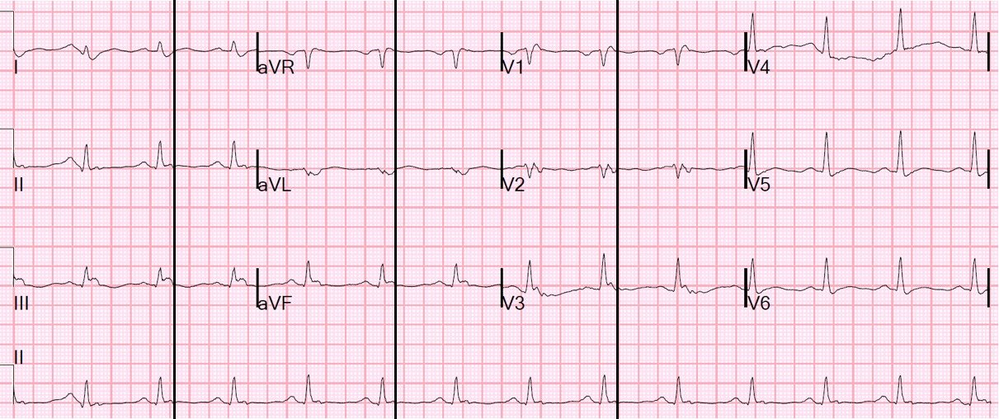
Kết quả kali trả về là 2.7 mEq/L. Tình trạng này thường gặp sau khi dùng epinephrine trong ngừng tim, nhưng cũng có thể đã có từ trước và có thể là một yếu tố góp phần gây ngừng tim.
Một ca tương tự gần đây:
Bệnh nhân 40 mấy tuổi bị đau ngực. Đây có phải nhồi máu cơ tim thành dưới không?
Thú vị không kém là điện tâm đồ 1, ghi 24 phút trước điện tâm đồ đầu tiên ở trên:

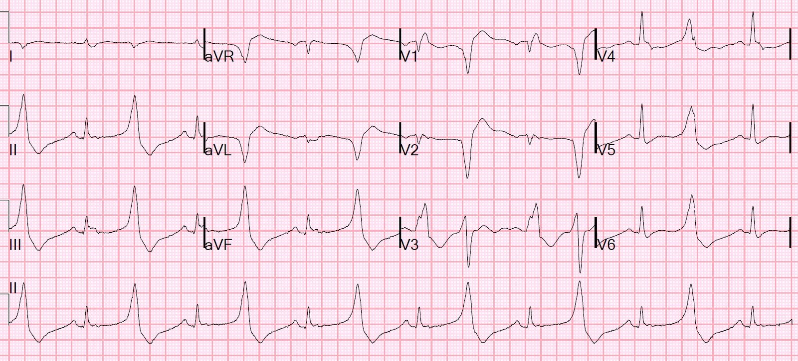
Có nhịp đôi (bigeminy) với các PVC trông rất kỳ dị. Những PVC như vậy thường gặp trong các ca xoắn đỉnh (Torsades de Pointes).
Bên dưới, tôi đăng thêm 4 ví dụ điện tâm đồ được ghi từ các bệnh nhân đã bị xoắn đỉnh.
1 giờ sau, bản ghi này được ghi lại:

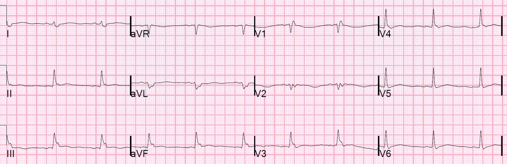
Đặc biệt hãy xem chuyển đạo V2, nơi QT là 640 ms, và QTc sẽ vào khoảng 680 ms.
Điều thú vị là máy tính đo QT chỉ 245 ms!!
Cần lưu ý, bệnh nhân đang dùng một số thuốc kéo dài QT cũng như hydroxychloroquine cho bệnh viêm khớp dạng thấp, nhưng không dùng thuốc kéo dài QT nào khác đã biết.
Bản ghi này được ghi lúc 6 giờ:

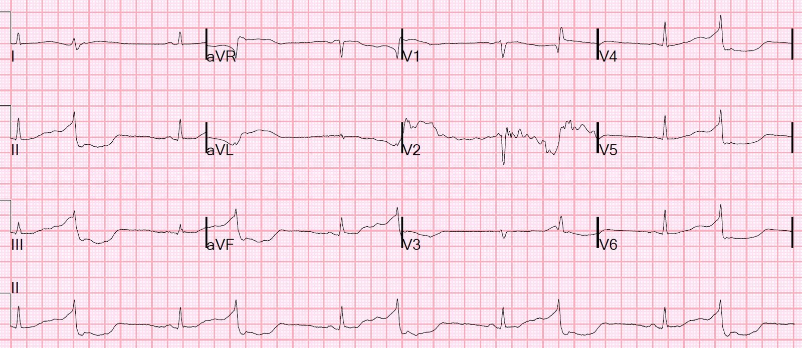

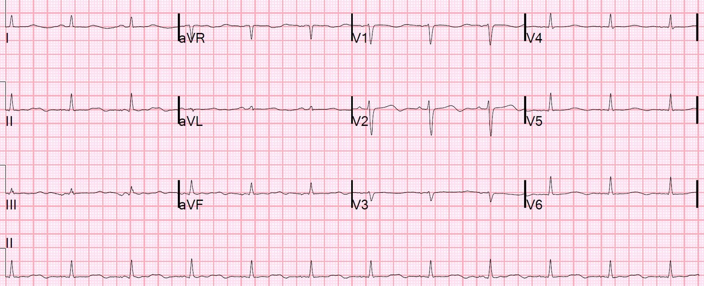
QTc = 449
Đã được bác sĩ tim mạch đọc lại (overread) xác nhận Rõ ràng QT dài hơn nhiều, hoặc đó là sóng U
Nồng độ kali

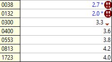
Troponin I đạt đỉnh 0.875 ng/mL, vì vậy bệnh nhân được chụp mạch vành.
Chụp mạch vành
–Xơ vữa động mạch vành tối thiểu
–Không thấy bệnh động mạch vành thượng tâm mạc gây tắc nghẽn hay bằng chứng nứt vỡ mảng xơ vữa để giải thích QT kéo dài hoặc ngừng tim do rung thất, nghi ngờ cơ chế không do thiếu máu cục bộ
Siêu âm tim
Phân suất tống máu thất trái ước tính là 45 %.
Không có rối loạn vận động thành.
Diễn biến lâm sàng
Ban đầu, nồng độ kali của bệnh nhân thấp và đã được bù. Dù đã bù kali, bệnh nhân vẫn tiếp tục có ngoại tâm thu thất kèm khoảng QT kéo dài và có 2 cơn hiện tượng R trên T (R-on-T) dẫn tới xoắn đỉnh, đã được sốc điện chuyển nhịp.
Vì vậy, bệnh nhân được đặt máy tạo nhịp tạm thời và tạo nhịp vượt tần số (overdrive pacing) với tần số 90 nhịp/phút để giữ tần số tim cao nhằm ngăn các PVC này khởi phát rối loạn nhịp thất.
Nguyên nhân sau cùng của QT dài chưa bao giờ được xác định chắc chắn. Hạ kali máu khó có khả năng là nguyên nhân vì bệnh nhân vẫn tiếp tục có rối loạn nhịp thất dù đã điều chỉnh điện giải. Không thể loại trừ hoàn toàn QT kéo dài do thuốc, nhưng bác sĩ hội chẩn độc chất xác định rằng bệnh nhân chắc chắn không dùng quá liều và không tin rằng liều điều trị lại gây ra tình trạng này.
Chẩn đoán cuối cùng: Ngừng tim do xoắn đỉnh trên nền QT dài không rõ nguyên nhân.
_____________________________________
Bên dưới, tôi đăng thêm 4 ví dụ điện tâm đồ được ghi từ các bệnh nhân bị xoắn đỉnh, hoặc ngay trước, trong, hoặc sau cơn.
3 trong số 4 bản ghi này có các PVC kỳ dị tương tự.

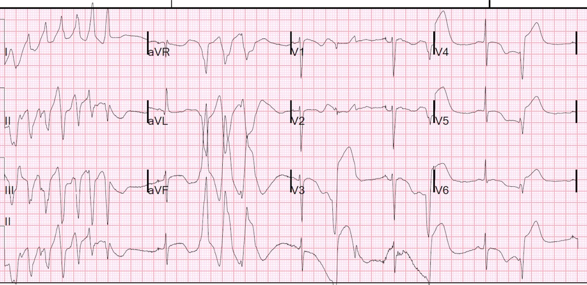

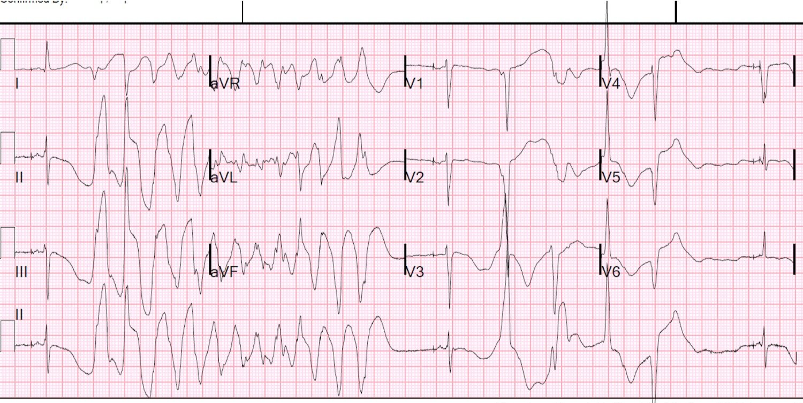

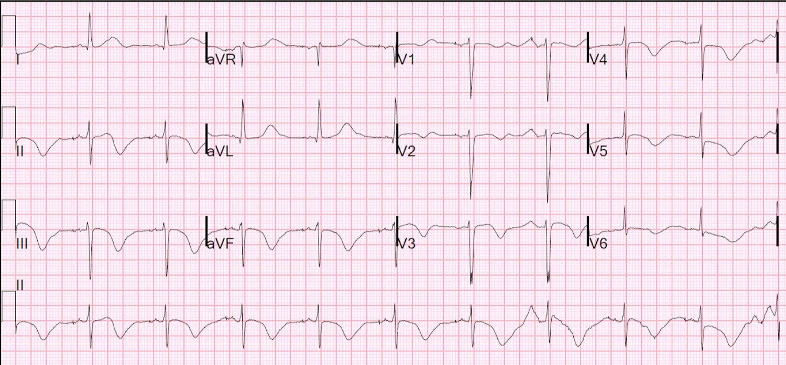

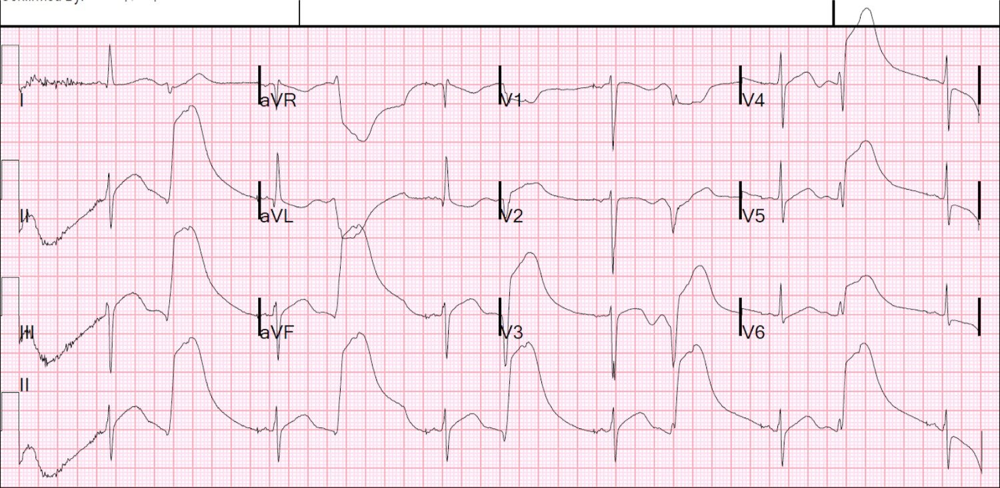

===================================
BÌNH LUẬN CỦA TÔI, bởi KEN GRAUER, MD (29/4/2020):
===================================
Ngừng tim với PVC kỳ dị/xoắn đỉnh (Torsades de Pointes): Một ca hấp dẫn với nhiều đặc điểm thú vị. Tôi sẽ tập trung bình luận vào một số điểm chọn lọc để bổ sung cho những điểm đã được Dr. Smith trình bày xuất sắc.
- ÔN TẬP lại những điểm liên quan của CA BỆNH: Bệnh nhân là một phụ nữ 60 mấy tuổi nhập viện trong tình trạng ngừng tim với hoạt động điện vô mạch (PEA). Kali (K+) huyết thanh ban đầu = 2.7 mEq/L, sau đó giảm xuống 2.0 mEq/L — trước khi được điều trị đưa về bình thường. Bệnh nhân đang dùng một số thuốc kéo dài QT. Thông tim cho thấy bệnh mạch vành tối thiểu. Bệnh nhân xuất hiện xoắn đỉnh, được chuyển nhịp bằng điện, và tái phát được ngăn ngừa bằng tạo nhịp vượt tần số. Bệnh nhân đã hồi phục. Chẩn đoán cuối cùng là ngừng tim do xoắn đỉnh trên nền QTc kéo dài không rõ nguyên nhân.
- Dr. Smith đã đưa ra tổng cộng 10 điện tâm đồ trong phần bình luận ở trên. Để rõ ràng — tôi đánh số 3 điện tâm đồ mà tôi bàn luận theo thứ tự xuất hiện của chúng trong phần bình luận của Dr. Smith ở trên (Hình 1):

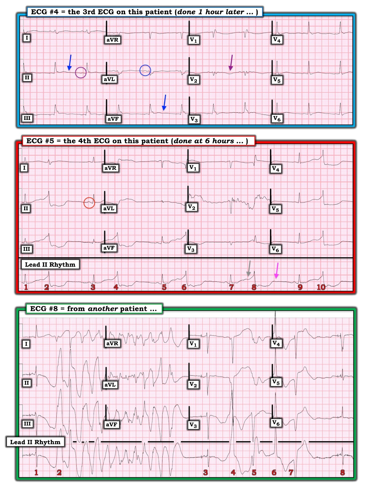
Điện tâm đồ #4 — Đây là điện tâm đồ thứ 3 được ghi trong ca này (ghi ~1 giờ sau khi đến khoa cấp cứu).
CÁC CÂU HỎI Về điện tâm đồ #4:
- Nói chung — nên dùng chuyển đạo NÀO trong 12 chuyển đạo của điện tâm đồ để đo khoảng QT?
- TẠI SAO điều này lại quan trọng trong một ca như ca được bàn luận hôm nay?
- Với điện tâm đồ #4 — nên dùng chuyển đạo NÀO trong 12 chuyển đạo để đo khoảng QT?
- Máy tính đo QTc là 245 msec. Vì kết quả đọc điện tâm đồ bằng máy tính lẽ ra phải chính xác khi đo các khoảng — LÀM SAO máy tính lại có thể sai lệch đến vậy?
- Điểm cộng: Nhịp trong điện tâm đồ #4 là nhịp GÌ? (Bạn cứ thoải mái xem trước điện tâm đồ #5 khi kiểm tra câu trả lời của mình.)
TRẢ LỜI Về điện tâm đồ #4:
- Chuyển đạo TỐT NHẤT trên điện tâm đồ 12 chuyển đạo để đo khoảng QT — là chuyển đạo mà ở đó bạn có thể thấy rõ ràng điểm bắt đầu và điểm kết thúc của QT — và là chuyển đạo có khoảng QT dài nhất.
- Lý do điều này quan trọng trong ca này là vì bệnh nhân này có cơ địa dễ bị, và về sau đã thực sự xuất hiện xoắn đỉnh.
- Đánh giá khoảng QT trong điện tâm đồ #4 cực kỳ khó khăn! Đó là vì không chuyển đạo nào trong 12 chuyển đạo thực sự cho thấy một điểm kết thúc rõ rệt của khoảng QT. Người ta có thể nghĩ các mũi tên XANH DƯƠNG ở chuyển đạo II và aVF chỉ điểm kết thúc của một QTc bình thường. Các chuyển đạo khác (tức là I, III, V3 đến V6) còn có điểm kết thúc của khoảng QT kém rõ hơn nữa. Nhưng như Dr. Smith đã nêu — MẤU CHỐT nằm ở việc tập trung vào chuyển đạo V2, với mũi tên TÍM làm nổi bật một sóng T âm nông-nhưng-rõ-rệt. Do đó, QTc kéo dài rõ rệt (tức là trên 600 msec). ĐIỀU CỐT LÕI: Hãy đo QTc ở chuyển đạo mà bạn thấy rõ nhất điểm kết thúc của khoảng, và có QT dài nhất ( = chuyển đạo V2 trong điện tâm đồ #4). Hãy NHỚ xem xét cả 12 chuyển đạo khi đo QTc!
- Nói chung — máy tính đo các khoảng chính xác. NHƯNG — số đo của máy tính phụ thuộc vào việc máy tính xác định điểm bắt đầu và điểm kết thúc của khoảng cần đo ở đâu. Như đã nhấn mạnh ở gạch đầu dòng trước — điểm kết thúc của khoảng QT trong điện tâm đồ #4 không rõ rệt, và cực kỳ khó xác định.
- ĐIỂM THEN CHỐT (PEARL) #1 — NẾU chính BẠN thấy khó xác định điểm kết thúc của khoảng QT, thì máy tính cũng sẽ thấy khó! Trong những trường hợp như vậy — Hãy nhớ rằng bạn không thể tin vào ước tính của máy tính, và BẠN cần tự mình đánh giá QTc!
- Trả lời Điểm cộng: BẠN có để ý rằng sóng P ở chuyển đạo II của điện tâm đồ #4 không dương không? (sóng P trong vòng tròn TÍM). Điều này có nghĩa nhịp trong điện tâm đồ #4 không phải nhịp xoang! Tuy nhiên, sóng P trong bản ghi này lại dương ở chuyển đạo I và aVL (sóng P trong vòng tròn XANH DƯƠNG). Điều này có nghĩa đây là nhịp nhĩ thấp. Xác nhận rằng nhịp trong điện tâm đồ #4 không phải nhịp xoang — có được khi xem chuyển đạo II trong điện tâm đồ #5, ở đó sóng P bây giờ đã dương ở chuyển đạo II (sóng P trong vòng tròn ĐỎ).
Khác biệt giữa PMVT và xoắn đỉnh là gì?
Một cách phân loại hữu ích các nhịp WCT (nhịp nhanh QRS rộng – Wide-Complex Tachycardia) — chia chúng thành nhóm đơn dạng (hình dạng QRS tương tự nhau trong suốt cơn nhịp nhanh) so với nhóm đa dạng (hình dạng QRS thay đổi).
- Khi hình dạng QRS của một nhịp nhanh thất không đều rõ ràng thay đổi từ nhát này sang nhát khác — nhịp đó được gọi là PMVT (nhịp nhanh thất đa dạng – PolyMorphic Ventricular Tachycardia).
- Xoắn đỉnh — được định nghĩa là PMVT xảy ra kèm theo QTc dài trên điện tâm đồ nền. Điều này càng đúng khi nhịp đang xét biểu hiện sự thay đổi cực tính của QRS quanh đường nền (tức là “xoắn quanh các đỉnh”), đặc trưng của xoắn đỉnh.
ĐIỂM THEN CHỐT (PEARL) #2 — Việc phân biệt PMVT với xoắn đỉnh không chỉ mang tính học thuật. Cả cách điều trị lẫn đáp ứng với điều trị thường khác nhau ở 2 thực thể này.
- Xoắn đỉnh — thường có nguyên nhân đa yếu tố (tức là do thuốc, thiếu hụt điện giải, rối loạn thần kinh trung ương và/hoặc rối loạn nền khác có thể dẫn tới QT kéo dài). Những khía cạnh MẤU CHỐT trong điều trị bao gồm Mg++ tĩnh mạch, thường dùng liều cao và đôi khi lặp lại (ngay cả khi nồng độ Mg++ huyết thanh ban đầu không thấp). Điều trị tối ưu xoắn đỉnh đòi hỏi tìm và “sửa” nguyên nhân gây QTc dài. Như đã thấy trong ca này — có thể cần khử rung và/hoặc tạo nhịp vượt tần số.
- Ngược lại — PMVT không có QT kéo dài phần lớn có nguyên nhân thiếu máu cục bộ. Mặc dù Mg++ tĩnh mạch cũng được chỉ định làm điều trị ban đầu cho PMVT có QT bình thường — rõ ràng nó ít có khả năng đáp ứng hơn so với khi khoảng QT kéo dài. Thay vào đó, có thể cần các thuốc chống loạn nhịp như amiodarone hoặc thuốc chẹn ß — và/hoặc điều trị nhắm vào việc khắc phục thiếu máu cục bộ.
Điện tâm đồ #5 — Đây là điện tâm đồ thứ 4 được ghi cho bệnh nhân trong ca này (ghi ~6 giờ sau khi đến khoa cấp cứu).
CÂU HỎI Về điện tâm đồ #5:
- Những dấu hiệu điện tâm đồ NÀO trong điện tâm đồ #5 tạo thuận lợi cho sự xuất hiện xoắn đỉnh?
TRẢ LỜI Về điện tâm đồ #5:
- Trong số các dấu hiệu ở điện tâm đồ #5 tạo thuận lợi cho sự xuất hiện xoắn đỉnh có: i) nhịp chậm nền; ii) khoảng QTc rất dài (mũi tên XÁM ở dải nhịp chuyển đạo II dài cho thấy điểm kết thúc của khoảng QT, có vẻ ít nhất là 600 msec); iii) Các PVC thường xuyên và trông kỳ dị, cũng biểu hiện khoảng QT cực kỳ dài (mũi tên HỒNG chỉ điểm kết thúc của QT của PVC, tức nhát #8).
- ĐIỂM THEN CHỐT (PEARL) #3: Như Dr. Smith đã nêu — các PVC trông kỳ dị thường gặp ở những bệnh nhân về sau xuất hiện xoắn đỉnh.
Điện tâm đồ #8 — Đây là điện tâm đồ ghi từ một bệnh nhân khác đã biết có xoắn đỉnh, được Dr. Smith dùng để minh họa:
- Có tạo nhịp nhĩ ở các nhát QRS hẹp #1, 3 và 8.
- Lại lưu ý sự hiện diện của các PVC trông kỳ dị ( = nhát #2 và 4).
- Lưu ý việc đánh giá QTc của các nhát hẹp khó khăn đến mức nào — vì chúng ta thực sự không thấy điểm kết thúc rõ rệt của sóng T. Hơn mọi chuyển đạo khác — chuyển đạo I gợi ý QTc kéo dài — nhưng, chỗ đường nền trũng xuống rõ rệt thấy ở chuyển đạo II và III ghi đồng thời gợi ý đây có thể là nhiễu.
- Bắt đầu từ nhát #2 — một loạt xoắn đỉnh được khởi phát. Lưu ý sự thay đổi cực tính đặc trưng của các phức bộ QRS từ dương-sang-âm-sang-dương-rồi-âm trở lại (tức là “xoắn quanh các đỉnh”).
Những điểm cần học cuối cùng — Trong thực hành, khi gặp PMVT, thường không biết (hoặc không thể xác định được) QTc nền có kéo dài hay không. Đây là trường hợp của điện tâm đồ #8 — vì tôi sẽ không chắc chắn rằng QTc nền kéo dài chỉ từ một bản ghi duy nhất này. Như đã giải thích ở trên — việc phân biệt giữa xoắn đỉnh với PMVT có QTc bình thường là quan trọng — vì NẾU QTc thực sự kéo dài, thì PMVT đó là xoắn đỉnh — khi đó cách điều trị và đáp ứng với điều trị có thể khác so với khi nhịp là PMVT không có QT kéo dài.
- Hy vọng rằng hoặc điện tâm đồ nền và/hoặc việc theo dõi thêm bệnh nhân sẽ cho thấy rõ hơn QTc nền có kéo dài hay không.
- Đánh giá cẩn thận các yếu tố lâm sàng có thể tạo thuận lợi cho nguyên nhân này hay nguyên nhân kia (xoắn đỉnh so với PMVT) có thể giúp ích nếu điện tâm đồ duy nhất có được không cho thấy rõ điểm kết thúc của khoảng QT ở bất kỳ chuyển đạo nào (tức là K+ và Mg++ huyết thanh có thấp không? Có dùng thuốc kéo dài QT không? Có thiếu máu cục bộ cấp không? v.v.).